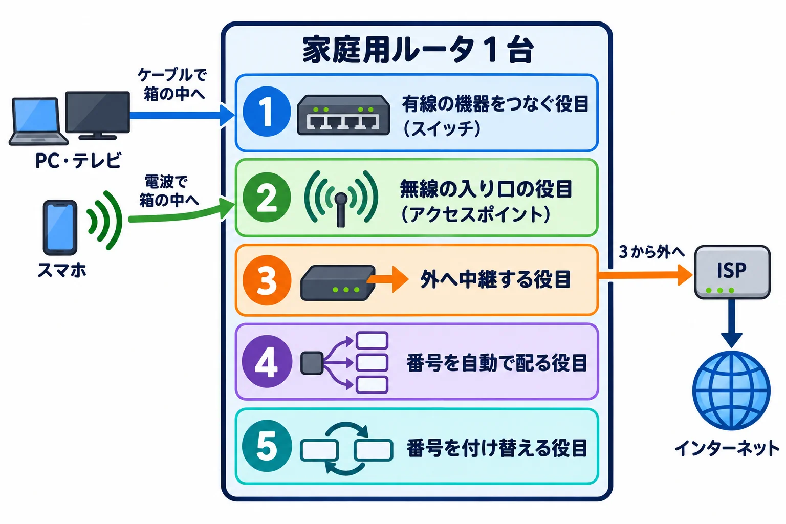

ネットワークのしくみ › 4-2
第 4 章 家庭とオフィスの LAN — Wi-Fi・家庭用ルータ・DHCP 4-2
1 台に、いくつもの役目が詰め込まれている
このページでわかること
家に 1 台置くだけでインターネットにつながる、あの箱には、いくつもの役目が詰め込まれている。家の中の機器をつなぐ役目、無線の入り口の役目、外のインターネットと中継する役目、番号を配る役目、番号を付け替える役目の 5 つが、1 台にまとまっている。このページでは、その 5 つを 1 つずつ確認する。
このページの目次
かけあい
前のページで、家庭用ルータが無線の入り口の役目も持ってるって聞きましたけど、他にも役目があるんですか?
あります。全部で 5 つで、家の中の有線の機器をつなぐ役目、無線の入り口になる役目、外のインターネットとの間で中継する役目、番号を自動で配る役目、番号を付け替える役目です。1 つずつ見ていくので、まず全体を図で見ましょう。

家庭用ルータ 1 台の中と、つながるもの
PC・テレビ → ケーブルで箱の中へ
スマホ → 電波で箱の中へ
+- 家庭用ルータ 1 台 -----------------
| 1 有線の機器をつなぐ役目(スイッチ)
| 2 無線の入り口の役目
| (アクセスポイント)
| 3 外へ中継する役目
| 4 番号を自動で配る役目
| 5 番号を付け替える役目
+-------------------------------------
↓ 3 から外へ
ISP → インターネット
家庭用ルータは、5 つの役目を 1 つの箱に入れて、内側の機器と外のインターネットの間に立っている。外へ出る線の途中にもう 1 つ箱が入るが、その話は 4-3 で見る。
1 つ目の「有線の機器をつなぐ」って、スイッチのことですか?
はい、第 3 章で見たスイッチと同じ役目です。ある演習の家庭用ルータは、有線の機器を最大 4 台つなげるスイッチを含んでいて、2 台のパソコンをそれぞれ別の口につないでいました。
無線の入り口は、前のページで見たアクセスポイントですよね。
そのとおりです。電波を出して無線の機器を受け付ける役目を、家庭用ルータが兼ねています。
3 つ目の「外のインターネットと中継する」は、どうやって外とつながるんですか?
家庭用ルータには、有線の機器をつなぐ口とは別に、インターネット用の口が 1 つあります。外あての通信は、その口から出ていきます。壁との間にはもう 1 つ箱が入りますが、その話は 4-3 で見ましょう。
外あての通信をその口へ送るかどうかは、誰が判断してるんですか?
行き先に応じて次の転送先を選ぶ、ルータとしての役目です。経路の先にある専用のルータと同じ役目を、家庭用ルータは 1 台の中でこなしています。詳しくは第 8 章で扱います。
4 つ目の「番号を自動で配る」って、何のことですか?
つないだ機器に、使ってよい番号を自動で配る役目で、DHCP と呼ばれます。番号と一緒に、外へ出るときの出口となる機器のアドレスも渡されます。どうやって配るかは 4-4 で詳しく見ましょう。
番号を配るのと、番号を付け替えるのは、同じことなんですか?
別のことです。家の中で使う番号と、インターネットに出ていくときの番号は別物で、その 2 種類を付け替えるのが NAT という役目です。中身は第 10 章で詳しく扱います。
1 台にそんなに詰め込んで、大丈夫なんですか?
1 つの機械にトラブルが起きると、複数の役目が同時に影響を受けることはあります。ただ、家庭くらいの規模なら十分間に合いますし、設定も簡単で済みます。台数が多い場所はどうなるかは、4-5 で見ます。
じゃあ家庭用ルータは、スイッチ・アクセスポイント・ルータ・DHCP・NAT の 5 つの役目を 1 台で持ってるってことですね。
そのとおりです。次のページでは、壁からこの家庭用ルータまでの間に入る箱の話をしましょう。
まとめ
- 家庭用ルータは、家の中の機器をつなぐ役目(スイッチ)、無線の入り口の役目(アクセスポイント)、外のインターネットと中継する役目(ルータ)、番号を自動で配る役目(DHCP)、番号を付け替える役目(NAT)を 1 台にまとめた機械である。
- 有線の機器はスイッチの役目でつながり、無線の機器はアクセスポイントの役目でつながる。外あての通信は、インターネット用の口から出ていく。
- 行き先を選んで中継するのはルータの役目、機器に番号を配るのは DHCP の役目、家の中と外で番号を付け替えるのは NAT の役目で、対象が違う別の役目である。
- 1 台にまとめると設定は簡単になるが、トラブルが起きたときの影響も広がる。壁との間の箱は 4-3、台数が多い場所の話は 4-5 で扱う。
しくみの話
家庭用ルータは、複数の役目を 1 台にまとめた機械である。家の中の有線機器をつなぐスイッチの役目、無線の機器を受け入れるアクセスポイントの役目、行き先に応じて次の転送先を選ぶルータの役目、機器に使ってよい番号を自動で配る DHCP の役目、家の中と外で番号を付け替える NAT の役目を持つ。外あての通信は、有線の機器用の口とは別にあるインターネット用の口から出ていく。経路の先にある専用の機器が 1 つの役目に特化しているのに対し、家庭用ルータは 1 台でこれらをまかなう。扱いは簡単になる一方、トラブルが起きたときの影響範囲は広くなりやすい。
| 役目 | 一言 | 詳しく扱う場所 |
|---|---|---|
| スイッチ | 家の中の有線機器をつなぐ | 第 3 章 |
| アクセスポイント | 無線の機器を受け入れる | 4-1 |
| ルータ | 行き先を選んで中継する | 第 8 章 |
| DHCP | 番号を自動で配る | 4-4 |
| NAT | 家の中と外で番号を付け替える | 第 10 章 |
参考文献
- [#43] Cisco Networking Academy「Networking Basics」 — 原典(演習 4.4.4「ワイヤレスルータとクライアントを設定する」、ルータにスイッチが含まれて最大 4 台の有線接続を受け付けること、有線ポート・無線・DHCP が 1 つの機器にまとまっている場面)
- [#65] Juniper Networks「Day One: Routing the Internet Protocol」 — 原典(p.11、クライアントは手動または DHCP によって IP アドレスと、外へ出るときの出口となる機器のアドレスを割り当てられること)
クイズ
家庭用ルータの「番号を配る役目(DHCP)」と「番号を付け替える役目(NAT)」は、どちらも番号に関わる役目だが、なぜ別の役目なのか。
家庭用ルータの役目の説明として正しいものはどれか。
スイッチとアクセスポイントの役目の違いとして正しいものはどれか。